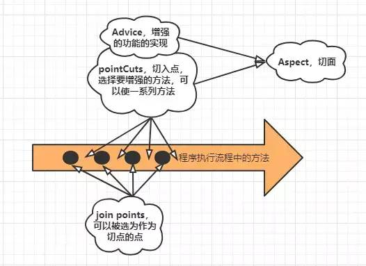

理解Spring：AOP的原理及手动实现
点击上方“Java知音”，选择“置顶公众号”
技术文章第一时间送达！
作者：宁愿
juejin.im/post/5c1c402b6fb9a049a570df27
引入
到目前为止，我们已经完成了简易的IOC和DI的功能，虽然相比如Spring来说肯定是非常简陋的，但是毕竟我们是为了理解原理的，也没必要一定要做一个和Spring一样的东西。到了现在并不能让我们松一口气，前面的IOC和DI都还算比较简单，这里要介绍的AOP难度就稍微要大一点了。
tips
本篇内容难度较大，每一步都需要理清思路，可能需要多看几遍，多画类图和手动实现更容易掌握。
AOP
什么是AOP
Aspect Oriented Programming：面向切面编程，作用简单来说就是在不改变原类代码的前提下，对类中的功能进行增强或者添加新的功能。
AOP在我们开发过程中使用频率非常的高，比如我们要在多个地方重用一段代码的功能，这时我们可以选择的方式很多，比如直接代码拷贝，也可以将代码封装成类或方法，使用时调用。但是问题是这种方式对代码来说有着很强的侵入性，对于程序员来说，将重复的东西拷来拷去也是一件麻烦事。
而AOP可以很好的解决这类问题，在AOP中我们可以指定对一类方法进行指定需要增强的功能。比如我们在系统中记录数据修改的日志，每个对数据修改的方法都要记录，但是其实完全是一样的方法，使用AOP能大大增加开发效率。
AOP的一些概念
通知(advice)：通知定义了一个切面在什么时候需要完成什么样的功能，通知和切点组成切面。
切点(pointCut)：切点定义了切面需要作用在什么地方。
切面(Aspect)：是通知和切点的组合，表示在指定的时间点内对指定的地方进行一些额外的操作。
链接点(join points)：连接点表示可以被选择用来增强的位置，连接点是一组集合，在程序运行中的整个周期中都存在。
织入(Weaving)：在不改变原类代码的前提下，对功能进行增强。

关于AOP的简单分析
通知(advice)
通知定义了一个切面在什么时候需要完成什么样的功能，很明显advice的实现不是由框架来完成，而是由用户创建好advice然后注册到框架中，让框架在适当的时候使用它。这里我们需要考虑几个问题。
用户创建好的advice框架怎么感知？框架如何对用户注册的不同的advice进行隔离？
这个问题很简单，大多数人都明白，这就类似于Java中的JDBC，Java提供一套公共的接口，各个数据库厂商实现Java提供的接口来完成对数据库的操作。我们这里也提供一套用于AOP的接口，用户在使用时对接口进行实现即可。
advice的时机有哪些？需要提供哪些接口？
这里直接拿Spring中定义好的增强的时机。
Before：在方法调用之前调用通知
After：在方法完成之后调用通知，无论方法执行成功与否
After-returning：在方法执行成功之后调用通知
After-throwing：在方法抛出异常后进行通知
Around：通知包裹了被通知的方法，在被通知的方法调用之前和调用之后执行自定义的行为
好了，我们可以使用一个接口来定义上面的处理方法，在用户使用的时候实现方法即可，如下：

貌似差不多了，但是我们需要注意到，用户在使用advice的使用，不可能说每次都是需要对上述几种方式同时进行增强，更多可能是只需要一种方式。但是如果只有一个接口的话就要求用户每次都需要实现所有的方法，这样显的十分的不友好。
我们应该让这些不同的方法对于用户来说是可选，需要什么就实现哪一个。那么我们需要将每一个方法都对应一个接口吗？不需要。上面的after(…)和afterSuccess(…)都是在方法执行之后实现，不同在于一个需要成功后的返回值而另一个不需要，这两个可以作为一个实现由返回值区分。进行异常后的增强处理，这要求对被执行的方法进行包裹住，捕获异常。这就和环绕差不多了，两者可以放一起。
类图：

pointcut
advice基本就这样了，下面就是pointcut了。说起切点，用过Spring中的AOP的肯定对切入点表达式比较了解了，在Spring中用户通过切入点表达式来定义我们的增强功能作用在那一类方法上。这个切入点表达式十分的重要。对于我们的手写AOP来说，也需要提供这样的功能。当然表达式由用户来写，由我们的框架来解析用户的表达式，然后对应到具体的方法上。
如何解析用户定义的表达式？上面说到了，由一串字符来匹配一个或多个不同的目标，我们第一个反应肯定是正则表达式，很明显这个功能使用正则是可以进行实现的。但实际上这样的表达式还有很多。比如AspectJ，Ant path等。具体使用什么就自己决定了，这里我实现正则匹配这一种。
execution(modifiers-pattern? ret-type-pattern declaring-type-pattern?name-pattern(param-pattern)
throws-pattern?)
1.如何找到我们要增强的方法呢？
当我们确定好有哪些类的哪些方法需要增强，后面就需要考虑我们如何获取到这些方法(对方法增强肯定需要获取到具体的方法)。
2.有了表达式我们可以确定具体的类和方法，表达式只是定义了相对的路径，如何根据相对路径获取Class文件地址？
对bean实例的增强是在初始化的时候完成的，初始化的时候判断如果需要增强，则通过代理生成代理对象，在返回时由该代理对象代替原实例被注册到容器中。
3.Class文件有了，怎么取到类中的方法？
在前面章节中我们获取过方法，使用Class对象即可获取所有的非私有方法。在实际调用被增强方法时，将该方法与所有的advice进行匹配，如果有匹配到advice，则执行相应的增强。当然我们并不需要每一次都需要遍历获取，为了效率可以对方法和增强的advice进行缓存。
Aspect/Advisor
我们有了增强功能的实现和确定了需要增强那些方法。到了现在我们就需要将拿到的方法进行增强了。
在运行过程中对已有的类或方法的功能进行增强同时又不改变原有类的代码，这妥妥的代理模式嘛。如果不理解代理模式的可以看这个教程:代理模式，代理模式可以在运行期间对方法进行增强，很好的实现我们的需求。
到现在，用户要实现AOP需要提供什么呢？
用户如果要实现AOP，首先必须提供一个Advice(通知)来增强功能，一个expression表达式来定义增强哪些方法，实际上还需要指定使用哪一个解析器来解析传入的表达式(正则，AspectJ…)。如果单独提供这些东西对用户来说还是比较麻烦的，而框架的作用是帮用户简化开发过程中的流程，尽量的简单化。所以在这里我们可以对用户提供一个新的外观(门面)，让用户更加简单的使用。这里其实是使用了外观模式的思想。

当我们在注册bean和调用方法时，对方法的增强会用到Advisor，所以我们还需要提供一个注册和获取Advisor的接口。

Weaving
现在我们有了切面，用户也已经能够比较简单的来定义如何使用切面，最重要的一步到了，那就是我们应该如何对需要增强的类进行增强呢？什么时候进行增强？
上面已经说过了对类和方法进行增强就使用代理模式来增强。那么我们作为框架该在什么什么时候来增强呢？
这里有两种时机。一是在启动容器初始化bean的时候就进行增强，然后容器中存放的不是bean的实例，而是bean的代理实例。二是在每一次使用bean的时候判断一次是否需要增强，需要就对其增强，然后返回bean的代理实例。这两种方法很明显第一种比较友好，只是让容器的启动时间稍微长了一点，而第二种在运行时判断，会使得用户的体验变差。
在初始化bean的那个过程来增强？会不会存在问题？
根据之前的介绍，我们的框架初始化bean是在BeanFactory中进行，还包括bean的实例化，参数注入以及将bean放入容器中等。很明显对bean的增强应该是在bean实例化完成并在还没有放进容器中的时候。那么也就是在BeanFactory的doGetBean方法中了。
这里有一个小问题在于，doGetBean方法做的事情已经够多了，继续往里加入代码无疑会使得代码大爆炸，很难维护也不易扩展。为了解决这个问题这里我们可以使用观察者模式来解决这一问题，将doGetBean方法中每一个过程都作为一个观察者存在，当我们需要添加功能是既可以添加一个观察者然后注入，这样不会对已有代码做出改变。
定义一个观察者的接口：

这里我们暂时只定义了aop应用的观察者，其他的比如实例化，参数注入后面慢慢加。
BeanPostProcessor是在BeanFactory中对bean进行操作时触发，我们也应该在BeanFactory中加入BeanPostProcessor的列表和注册BeanPostProcessor的方法。

在这里的观察者模式的应用中，BeanFactory充当subject角色，BeanPostProcessor则充当observer的角色，BeanFactory监听BeanPostProcessor，我们可以将功能抽出为一个BeanPostProcessor，将其注册到BeanFactory中，这样既不会使得BeanFactory中代码过多，同时也比较容易做到了功能的解耦，假设我们不需要某一个功能，那么直接接触绑定即可而不需要任何其他操作。在这里我们只实现了Aop功能的注册。

假设我们要对其他功能也抽为一个观察者，那么直接继承BeanPostProcessor接口实现自己的功能然后注册到BeanFactory中。
功能实现分析
现在接口有了，我们现在需要考虑如何来实现功能了。那么我们现在梳理一下我们需要做什么。
在进行bean创建的时候，需要判断该bean是否需要被增强，这个工作是由AopPostProcessor接口来做，判断是否需要被增强和通过哪种方式来增强(JDK代理还是cglib代理)。如果需要增强则创建代理对象，注册到容器是则使用该代理对象。
在1中说到需要创建代理对象，那么我们也就需要提供代理的实现，目前代理主要是通过JDK代理和cglib代理模式，两者的主要区别在去JDK代理模式必须要求类实现了接口，而cglib则不需要。
在实际对实例增强方法调用时，框架需要对该方法的增强方法进行调用，如何进行调用以及存在多个增强方法是如何来调用。
现在我们对以上的问题分别分析解决。
代理实现
代理的实现就是常规的实现，我们提供对外创建代理实例的方法和执行方法的处理。

JDKDynamicProxy和CglibDynamicProxy共同实现了AopProxy接口，除此之外要实现代理JDKDynamicProxy还需实现InvocationHandler接口，CglibDynamicProxy还需实现MethodInterceptor接口。
可能有朋友注意到了，在创建代理的类中都有一个BeanFactory的变量，之所以会用到这一个类型的变量是因为当方法运行时匹配到advice增强时能从BeanFactory中获取Advice实例。而Advisor中并没有存Advice的实例，存储的是实例名(beanName)。
但是问题在于这个变量的值我们如何获取，对于一般的bean我们可以从容器中获取，而BeanFactory本身就是容器，当然不可能再从容器中获取。我们首先梳理下获取变量值的方法：
通过依赖注入从容器中获取，这里不合适。
直接创建一个新的值，这里需要的是容器中的实例，重新创建新的值肯定没了，如果再按照原流程走一次创建一模一样的值无疑是一种愚蠢的做法，这里也不合适。
传参，如果方法的调用流程可以追溯到该变量整个流程，可以通过传参的方式传递
Spring中的做法，和3差不多，也是我们平时用的比较多的方法。提供一系列接口，接口唯一的作用就是用于传递变量的值，并且接口中也只有一个唯一的Set方法。

提供一个Aware父接口和一系列的子接口，比如BeanFactoryAware ,ApplicationContextAware用于将这些值放到需要的地方。如果那个类需要用到Spring容器的变量值，则直接实现xxxAware接口即可。Spring的做法是在某一个过程中检测有哪些类实现了Aware接口，然后将值塞进去。
这里我们的准备工作都已经差不多了，后面就是开始将定义好的接口中的功能实现了。

如果存在多个不同类型的增强方法时如何调用
由于在增强过程中，对于同一个方法可能有多个增强方法，比如多个环绕增强，多个后置增强等。通常情况下我们是通过一个for循环将所有方法执行，这样的：

但是这里的问题在于，这中间的任何一个环绕方法都会执行一次原方法(被增强的方法)，比如在环绕增强中的实现是这样的：
//before working
//invoke 被加强的方法执行
//after working
这样如果还是一个for循环执行的话就会导致一个方法被多次执行，所以for循环的方法肯定是不行的。我们需要的是一种类似于递归调用的方式嵌套执行，这样的：

前面的方法执行一部分进入另一个方法，依次进入然后按照反顺序结束方法，这样只需把我们需要加强的方法放在最深层次来执行就可以保证只执行依次了。而责任链模式可以很好的做到这一点。
调用流程的具体实现：
public class AopAdviceChain {
private Method nextMethod;
private Method method;
private Object target;
private Object[] args;
private Object proxy;
private List<Advice> advices;
//通知的索引 记录执行到第多少个advice
private int index = 0;
public AopAdviceChain(Method method, Object target, Object[] args, Object proxy, List<Advice> advices) {
try {
//对nextMethod初始化 确保调用正常进行
nextMethod = AopAdviceChain.class.getMethod("invoke", null);
} catch (NoSuchMethodException | SecurityException e) {
e.printStackTrace();
}
this.method = method;
this.target = target;
this.args = args;
this.proxy = proxy;
this.advices = advices;
}
public Object invoke() throws InvocationTargetException, IllegalAccessException {
if(index < this.advices.size()){
Advice advice = this.advices.get(index++);
if(advice instanceof BeforeAdvice){
//前置增强
((BeforeAdvice) advice).before(method, args, target);
}else if(advice instanceof AroundAdvice){
//环绕增强
return ((AroundAdvice) advice).around(nextMethod, null, this);
} else if(advice instanceof AfterAdvice){
//后置增强
//如果是后置增强需要先取到返回值
Object res = this.invoke();
((AfterAdvice) advice).after(method, args, target, res);
//后置增强后返回 否则会多执行一次
return res;
}
return this.invoke();
}else {
return method.invoke(target, args);
}
}
}
在代码中可以看到，如果是前置增强则直接调用，而如果是环绕或者后置增强，则都不会立刻执行当前的增强方法，而是类似递归调用一样，进行下一个执行。这样就能保证被增强的方法不会被多次执行，同时对方法增强的顺序也不会乱。
代码托管
在上面基本都只是分析了主要的原理和实现思路，在实际实现过程中涉及的类和借口会更多，一些涉及到公共方法或者工具类上面都没有列出，由于代码较多限于篇幅原因不在文章列出。若需看实现，代码已经全部托管到GitHub。
https://github.com/lliyu/myspring
小结
AOP的简单实现这里也算是完成了，AOP算是比较难的内容了，主要是涉及到知识点很多。使用的设计模式也很多，包括工厂模式，外观模式，责任链模式等等。并且也和前面的IOC和DI的内容紧密相关。所以大家最好还是理一遍思路后能手动进行实现一次，这样掌握起来也比较容易。
END
Java面试题专栏

让我知道你 “在看”